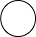
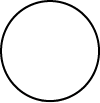
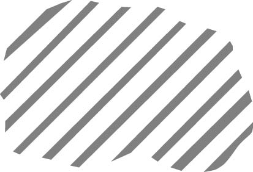
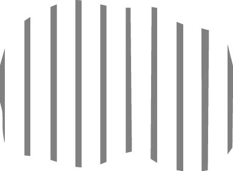

Розселення українців у 2001 р.
Розселення у районах
(українців, %)
10.0-30.0
30.1-50.0
50.1-70.0
70.1-90.0
понад 90.0
Людність міст
(тис. осіб)
5-20
20-50
50-100
100-500

500-1000

понад 1000
Частка українців у населенні міст
Частка українців (%)
Територія зони відчуження

Зона обов'язкового відселення населення після аварії на ЧАЕС

Чорнобильська зона відчуження